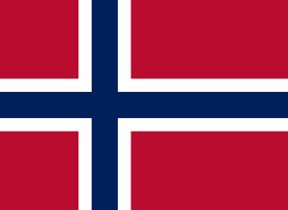
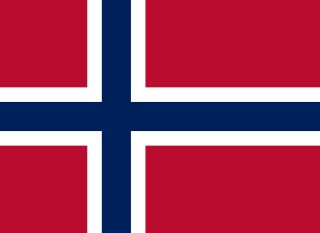

Bienvenido al Club de Olabeaga
Historia
El Acero Fútbol Club Olabeaga es un club de fútbol de la ciudad de Bilbao, Vizcaya, País Vasco, España. Fue fundado en 1916 y juega en la Tercera División de España. El club disputa sus partidos como local en el Campo de Fútbol de Olabeaga, con capacidad para 2.000 espectadores. El club fue fundado en 1916 con el nombre de Club Deportivo Olabeaga, adoptando el nombre de Acero Fútbol Club Olabeaga en 1920. En 1928 se fusionó con el Club Deportivo Olabeaga, adoptando el nombre de Club Deportivo Acero Olabeaga. En 1931 se fusionó con el Club Deportivo Olabeaga, adoptando el nombre de Club Deportivo Acero Olabeaga.
Noticias
En el barrio se realizan todas las semanas actividades relacionadas con el equipo de fútbol para que los aficionados pasen buenos ratos:
-
Feria del Barrio
Una feria local con música en vivo, comida deliciosa y artesanías.
Fecha: 15 de septiembre
-
Clases de Yoga al Aire Libre
Disfruta de la tranquilidad del parque mientras practicas yoga.
Horario: Todos los sábados a las 9:00 AM
-
Cine bajo las Estrellas
Películas gratuitas para toda la familia en el anfiteatro del parque.
Fecha: 25 de septiembre
-
Taller de Arte para Niños
Los niños pueden explorar su creatividad a través de actividades artísticas.
Horario: Todos los miércoles a las 4:00 PM